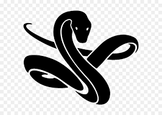

Pong is a table tennis sports game featuring simple two-dimensional graphics, manufactured by Atari and originally released in 1972.
Play
RPS
Rock Paper Scissors is a hand game usually played between two people, in which each player simultaneously forms one of three shapes with an outstretched hand.
Play

Snake
Snake is the common name for a video game concept where the player maneuvers a line which grows in length, with the line itself being a primary obstacle.
Play